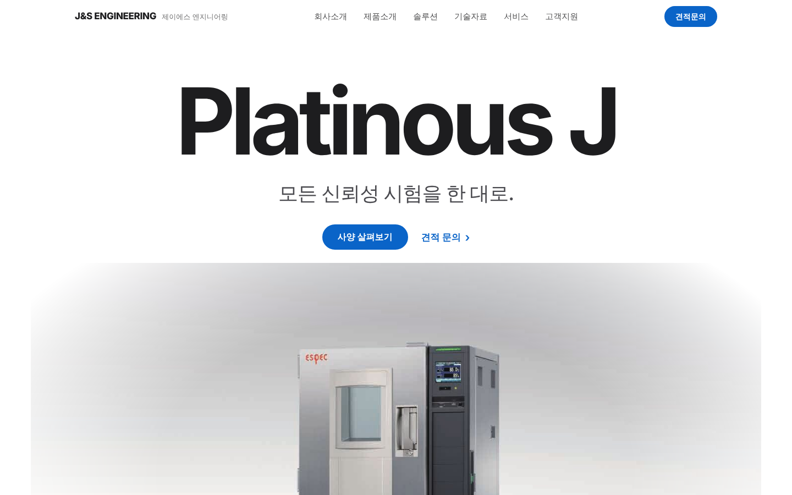
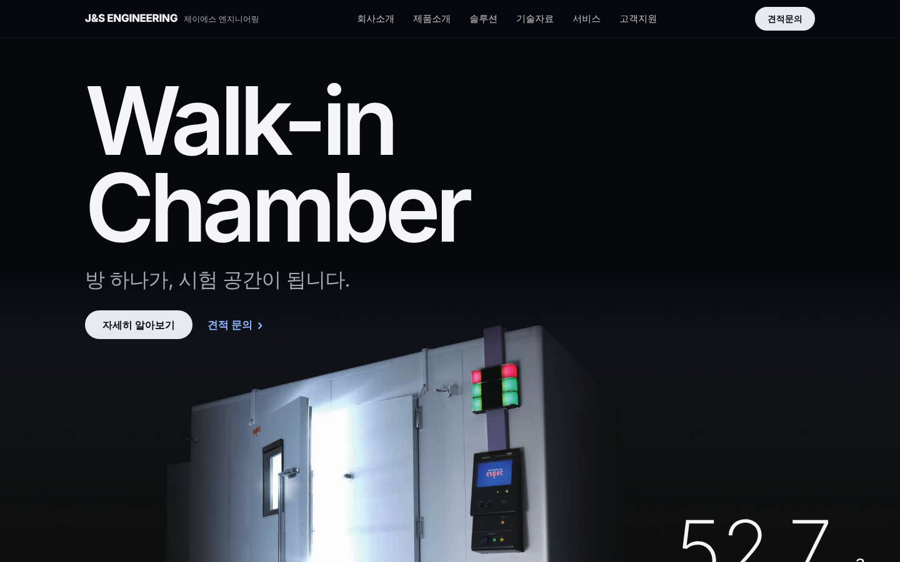
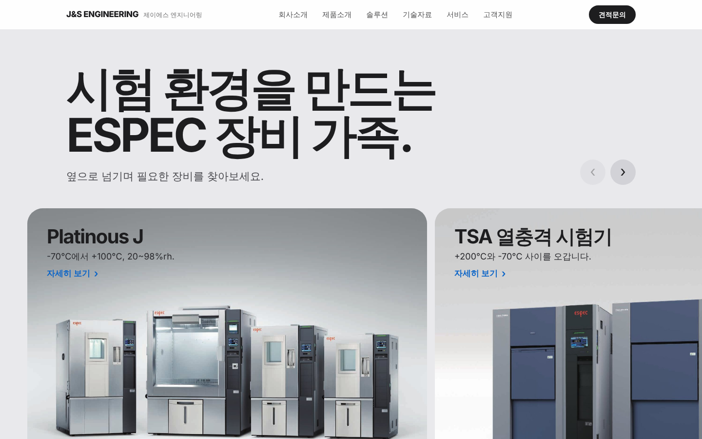
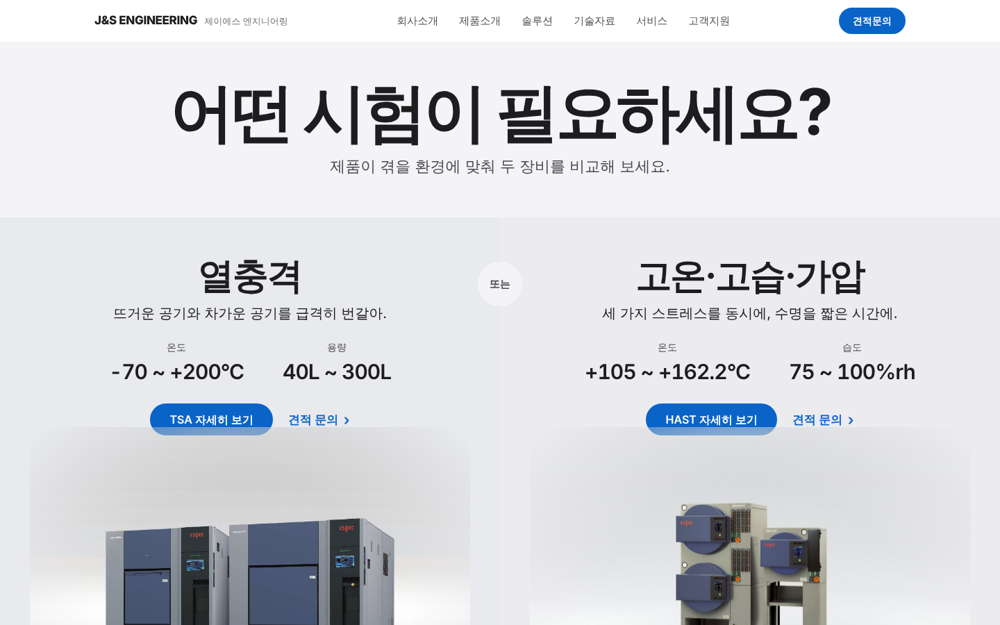
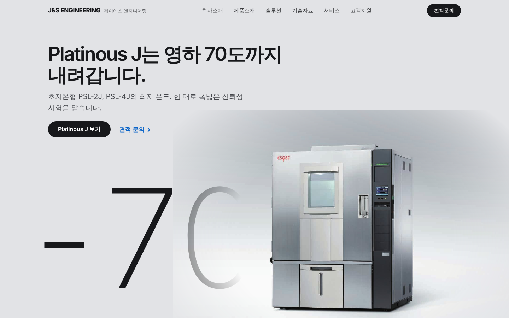
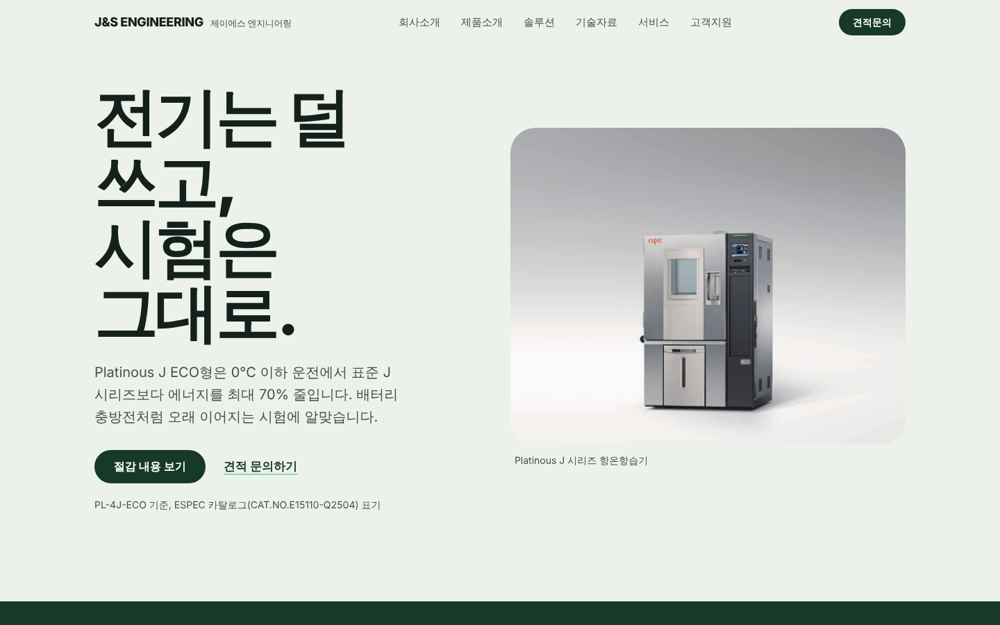
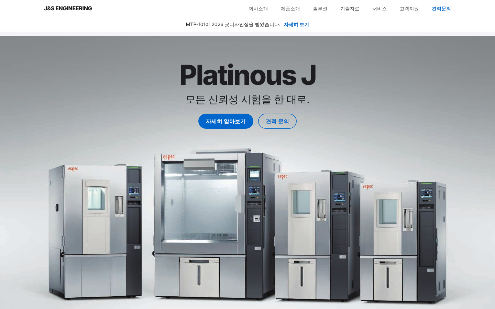
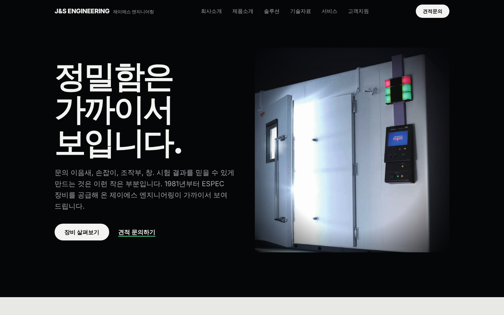
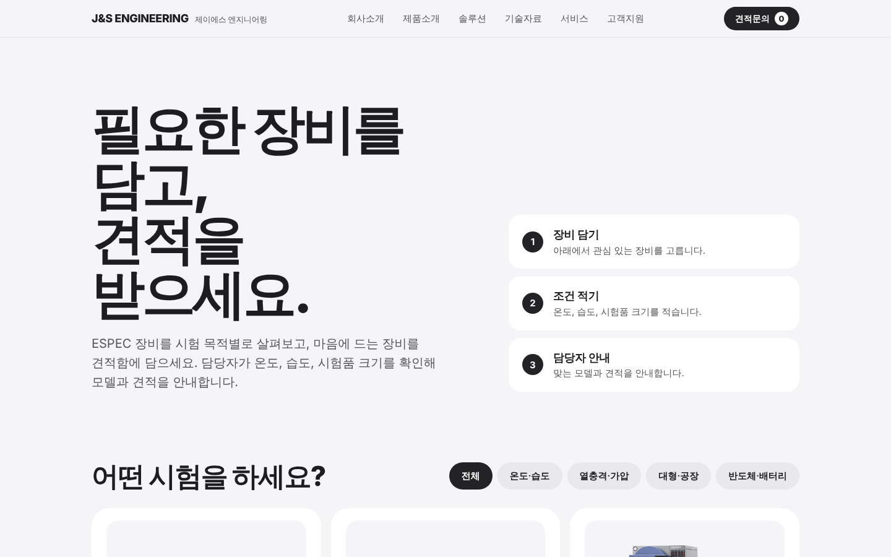
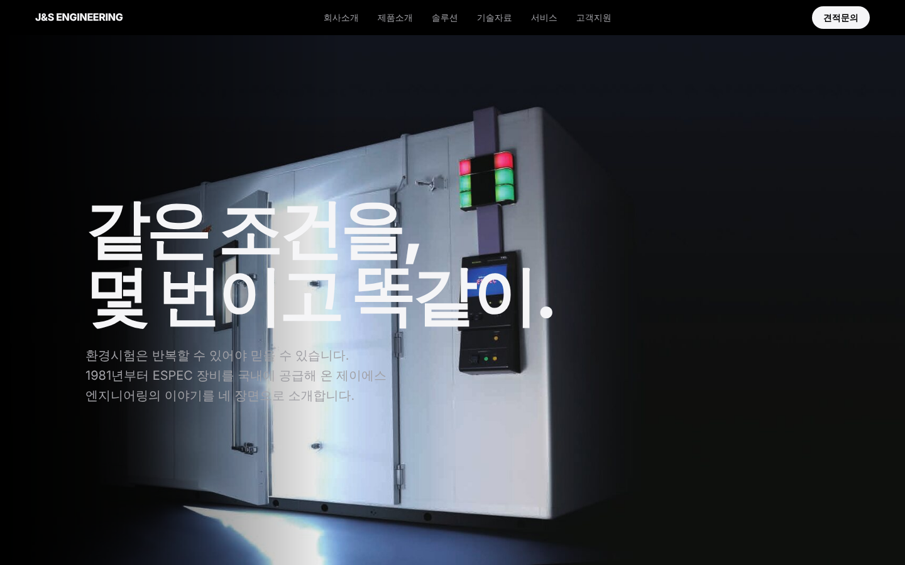

카드를 누르면 실제 페이지가 열립니다. 노란 [확인 필요]는 회사 확인 전까지 비워 둔 자리입니다.

A01 A01 흰 바탕 Platinous J 단독
A02 A02 Pro 다크, Walk-in Chamber
A03 A03 장비 가족 가로 갤러리
A04 A04 어떤 시험이 필요하세요? (비교형)
A05 A05 사양 페이지형, 거대한 숫자와 장비
A06 A06 친환경 이야기
A07 A07 apple.com 홈 구조
A08 A08 디테일 클로즈업
A09 A09 스토어형
A10 A10 키노트형